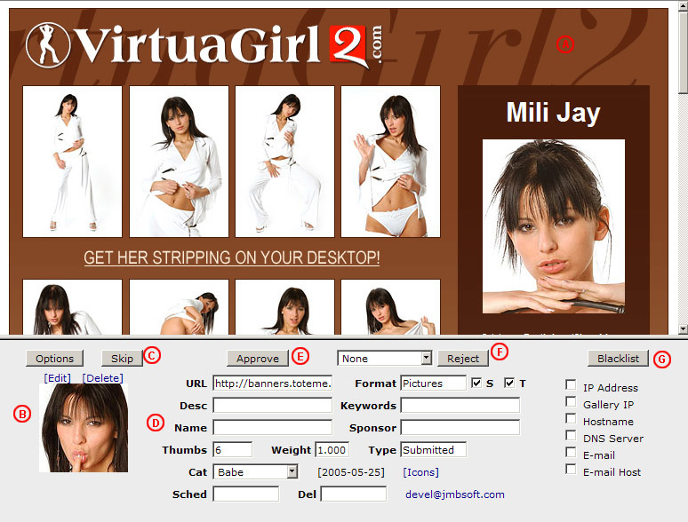

Introduction
AutoGallery SQL includes a gallery review tool which allows you to quickly view and process newly submitted galleries. The review tool uses a frameset
so you can view the gallery in one frame, and process it in another. Each time you process a gallery, the next one in line will be displayed.
Using The Gallery Review Tool
To access the framed gallery review tool, locate and click on the Review Galleries link in the Submitted Galleries section of the control panel
menu. AutoGallery SQL will open a new browser window for the gallery reviewer, and you will then be able to begin processing the newly submitted galleries.
The image below shows you what you will see when you access the gallery review tool.

- The upper frame of the review tool will always display the current gallery you are working on.
- This portion of the review tool allows you to modify or delete the preview thumbnail for the gallery.
- Clicking on the Skip button will move you on to the next gallery in line without making any changes.
- This portion of the review tool allows you to modify any of the gallery data that you want.
- Clicking on the Approve button will approve the gallery and move you on to the next one in line.
- Clicking on the Reject button will reject the gallery and move you on to the next one in line.
- Clicking on the Blacklist button will blacklist the gallery and move you on to the next one in line.
Preview Thumbnail
If a preview thumbnail was submitted with the gallery, it will be visible on the left hand side of the lower frame (B).
You can click on the [Delete] link to remove the gallery's preview thumbnail, or the [Edit] link to crop or upload
a new thumbnail.
If no preview thumbnail was provided with the gallery, you will see a [No Thumb] link. You can click on this link to crop or upload a new
preview thumbnail for the gallery if you wish.
Setting Options (3.6.2 Snapshot and newer)
If you want to change which galleries are shown you can click on the Options button which is directly to the left of the Skip button (C). This will bring
up an interface where you can configure the Type, Category, Format, and Sorting options. After you have configured the options how you want them, press the
Save button to begin reviewing the galleries that meet the criteria you have specified. You will then be able to go through all of the galleries that meet
that criteria until you have processed them all. At that point you will be able to change the options, save the settings, and begin reviewing a different
batch of galleries.
Skipping A Gallery
If you want to skip over a gallery without changing it, you will click on the Skip button (C). This will immediately move you on to the next
gallery in line. When you have processed all of the other pending galleries, you will have the option to come back to the galleries you skipped.
Approving A Gallery
If you find the gallery to be acceptable and want to approve it for your TGP, you will click on the Approve button (E). Before you do, you might
want to make changes to some of the form fields (D). If any of the submitted information is inaccurate or not to your liking, you can change it before
you approve the gallery. Each of the fields is described below.
URL - This is the full gallery URL
Format - This is the gallery format, either Pictures or Movies
S - Check this box if you want the gallery scanner to be able to scan this gallery
T - Check this box if you want the gallery scanner to be able to automatically create a thumbnail for this gallery
Desc - This is the gallery description
Keywords - These are keywords (separated by spaces) that describe the gallery
Name - This is the name or nickname of the gallery submitter
Sponsor - This is the name of the sponsor who owns the gallery
Thumbs - This is the number of thumbnails on the gallery
Weight - This is the weight you want to assign to the gallery
Type - This is the type of gallery, either Submitted or Permanent
Cat - This is the category of the gallery
Sched - This is the date that the gallery will become eligible for display. Leave blank if you do not want a specific date
Del - This is the date when the gallery will be deleted. Leave blank if you do not want a specific date
[Icons] - Click on this link to assign icons to this gallery
The date enclosed in [] is the date that the gallery was submitted. If the gallery was submitted by a partner, their username will appear in orange
text next to the approve button. If the URL field has a green colored background, it means that the gallery scanner was able to locate a reciprocal
link on the gallery when it was scanned during submission.
Rejecting A Gallery
If you do not want the gallery to appear on your TGP, you will click on the Reject button (F). Clicking this button will immediately delete the
gallery from the database, and send the gallery submitter the selected rejection e-mail (if you have the e-mail feature enabled).
The available rejection e-mails are listed in a drop down box directly left of the Reject button. If you do not want to send an e-mail, select the None option.
Otherwise, select the rejection e-mail you would like to send. To create custom rejection e-mails, see the
Rejection E-mails
section of this manual.
Blacklisting A Gallery
If you would like to delete the gallery and not allow further submissions from this webmaster or website, you will click on the Blacklist button (G). Clicking this
button will immediately delete the gallery from the database, and add the selected items to AutoGallery SQL's blacklist. Each of the items that can be blacklisted has a
checkbox next to it. Place a check in the box for each item that you want added to the blacklist from this gallery.
IP Address - This will blacklist the IP address of the gallery submitter
Gallery IP - This will blacklist the IP address of the gallery
Hostname - This will blacklist the hostname of the gallery. Example: www.site.com for a gallery with URL http://www.site.com/gallery/page.html
DNS Server - This will blacklist the DNS server of the gallery
E-mail - This will blacklist the full e-mail address of the gallery submitter
E-mail Host - This will blacklist the hostname of the gallery submitter's e-mail. Example: site.com for e-mail address fred@site.com